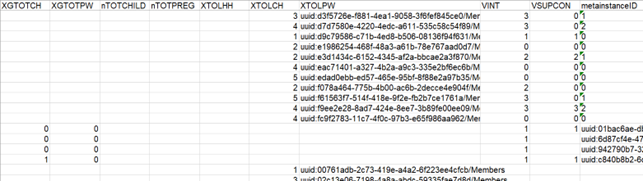

4 Anonymize
If the microdata is relevant for publication on the MDL, the Data Curator can start the anonymization process. This firstly involves data checking and preparation followed by the anonymization. This section provides general guidance on the anonymization process, with cross-cutting examples. Additional guidance complementary to this section that covers specific issues for several standard or semi-standard data collection exercises and surveys is covered in Annex – Further guidance on anonymization.
4.1 Data check and preparation
The objective of the data check and preparation is to identify any issues in a dataset (errors and inconsistencies across variables, data incompleteness, etc.) and ensure that:
the statistics shared in public reports are reproducible; and
the dataset is ready for re-use by other software packages and users (i.e. variable names and labels are logical, data is in a standard and reusable format, etc.)
A few points to note:
Ideally any issues in a dataset should have been addressed by the Data Provider as part of the primary data processing and use, and the data shared on RIDL is a clean version. Nonetheless, often the only data available on RIDL is the raw version and/or the clean version may still have some issues that need to be addressed before the data is anonymized and published on the MDL.
This step may reveal quality issues that would require a reconsideration of the relevance of the publication of the anonymous version of the dataset and/or put into question the results of an already published report or analytical piece. If this is the case, the Data Curator must present their concerns to the Data Provider.
Data Curators should take a conservative approach and any issue should be fixed only if necessary and only after discussing it with all the Data Providers and receiving their approval.
If that dataset requires any cleaning, it must be documented, preferably in a R script or other software package, to ensure the replicability of the results. A copy of the raw data (e.g. 0.1) or previous versions of the clean data prior to further cleaning (e.g. 1.1) shared on RIDL should always be preserved.
This section focuses on the most common issues found in personal microdata of PoCs collected by UNHCR and its partners, however every dataset has its own particularities and may require additional checks.
Data check and preparation checklist
Check variable names and labels
Check value name and labels
Check variable order
Check variable types
Check data completeness
Check for duplicate records
Check for missing values
Check for excess spacing in string values
Check for consistent responses
Check for consistent variable relationships
Check for outliers
Check consistency with primary analysis / report
Check consent variable
Check and prepare unique ID
Save clean version and cleaning script
Remove variables that will not be released
Prepare sample (if relevant)
Prepare weights
4.1.1 Variable names and labels
Variable names (or codes) are the short names used by a software to refer to or call a variable, whereas variable labels are a description of the variable, reflecting the question used in a questionnaire or instructions in a data collection form. At the very least, variable names and labels must be easily interpreted and follow the same style throughout the data. If standards or codebooks are not available from the Data Provider or within UNHCR and/or are not consistent or easily interpreted, the Humanitarian Exchange Language (HXL) should serve as a guide together with the general instructions below.)
The following table highlights how names and variable labels are referred to in R, Stata and Kobo, and any limitations.
| Software | Variable name | Variable label | ||
|---|---|---|---|---|
| How it is called in the software | Limitations | How it is called in the software | limitations | |
| R | name | No spaces | label | None |
| Will run into issues if use special characters such as @ or start name with an underscore (_) or number | ||||
| Cannot use words reserved for functions | ||||
| Stata | name | No spaces | label | 80-character limit |
| 32 characters | ||||
| First character must be a letter or one of the characters @, #, or $ | ||||
| Cannot use words reserved for functions | ||||
| KoBo | Data Column Name in form creator | No spaces | Question in form creator | No restrictions |
| XML values in data download | No limit on # of characters | Label in data download | ||
| Only letters, numbers, and underscores are allowed | ||||
| Must start with a letter or an underscore |
4.1.1.1 Variable names
Variable names should be concise, easy-to-read and, where possible, follow standards established or followed by UNHCR and its partners. In general, the following rules should be applied:
Variable names should be no longer than 32 characters.
Variable names should only include standard English letters (a,b,c…z), numbers (0,1,…9) and underscore (_).
Variable names should not include special alphabet letters (æ, ñ, é, etc.), forward/back slashes (/,), periods (.) or any other special characters ($, ’’, *, @, etc.) or spaces.
Variable names should always start with a letter. Do not start a name with a number or an underscore.
Variable names should be in lowercase when possible
While there is no style to follow strictly, once you choose a style you should stick with it for all the variables in the dataset. Common styles are underscore (_) separate words (for example: your_variable_name) or camel case (for example: yourVariableName). Underscore separated lowercase words is the preferred style.
If variable names refer to the questions of a survey, they should reflect the structure of the questionnaire. For example, question 4 of section 7 could be named as S07_04. If there are several alternatives in said question and each one is represented in a different column of the dataset, they could be named ordinally as S07_04_a.
If the same variable appears in multiple data files, it should have the same name (for example, the household ID may be present in both the household level file and the individual level file). On the other hand, if a variable is named equally across more than one data file but it refers to different information, one of them should be renamed
If the same variable name appears in the same data file more than once, one of the variables should be renamed.
Renaming variables in R
Code
#Given the dataset your_dataset – we will use this name in all examples -, you can print the variable names with the following command:
# print on console all variable names
names(your_dataset)
#You can rename all variable names with the following command (please note that you must provide a name for all the variables):
# Example of converting the names in a data frame with 4 variables
names(your_dataset) <- c("new_var_name1", "new_var_name2", "new_var_name3", "new_var_name4")
#If you just need to modify the name of one or few variables, the following code may be used:
# Convert the name of one variable
names(your_dataset) [names(your_dataset) == "old_var_name"] <- "new_var_name"
#And alternatively, you can use the dplyr package:
# Rename specific columns
your_dataset <- rename(your_dataset, new_var_name1 = old_var_name1, new_var_name3 = old_var_name3)
#Several other issues in the data can be easily and efficiently managed in R such as converting all variables to lowercase, replacing characters in variable names and trimming variable length. Example codes below:
# Convert all variable names to lowercase
names(your_dataset) <- tolower(names(your_dataset))
# Change forward slashes in variable names to underscores
names(your_dataset) <- gsub(x = names(your_dataset), pattern = "/", replacement = "_")
# Limit number of characters to <32. Pay attention b/c it may make two or more variables have the same variable name!!!
names(your_dataset) <- strtrim(names(your_dataset), 31)
#The clean_names function in the janitor package is also a useful tool to clean names, with a number of options. Read more about it here: https://www.rdocumentation.org/packages/janitor/versions/1.2.0/topics/clean_namesExporting variable names from Kobo
Variables in Kobo have labels (i.e., the question asked in the form) and XML values (i.e., name of the variable). While by default data downloaded from Kobo uses the complete questionnaire questions as column headers, data uploaded to RIDL should have the XML values from Kobo as variable name. To do this:
1. Set the “Value and header format’ to ‘XML values and headers’ when downloading data from Kobo. See screenshot below:

2. Ensure the RIDL record contains the Kobo form, which serves as both the questionnaire and data dictionary with the labels and names (XML values).
4.1.2 Variable order
The order in which variables (columns) appear in a data should be sensible and meaningful. Typically, unique IDs should come first, and other variables should appear in an order that makes it simple to understand the structure of the dataset. If the data was gathered through a survey, the variables order should reflect the questionnaire structure.
Changing variable order in R
Code
# using dplyr: specify the variable to move
variable_name <- "your_variable_name"
# Move as first variable of the dataset
your_dataset <- select(your_dataset, variable_name, everything())
# Move as last variable of the dataset
your_dataset <- select(your_dataset, - variable_name, everything())
# Move the variable to the third position
new_variable_position <- 3
your_dataset <- select(your_dataset, 1 : new_variable_position, variable_name, everything())
# Move var_y after var_x using tidyr
your_dataset <- your_dataset %>% relocate("var_y", .after = "var_x")
# Move var_y before var_x
your_dataset <- your_dataset %>% relocate("var_y", .before = "var_x")
#Alternatively, you can specify the exact order of all the variables with the following code. In this case you must list out all the variables in the dataset.
# Write ALL the variables" names in the desired order
# in this simple example, the dataset has only 3 variables
new_variable_order <- c("var_x", "var_y", "var_z")
# Update the dataset with the new order
your_dataset <- your_dataset[ , new_variable_order]
4.1.3 Variable types
4.1.3.1 Variable type
Depending on the software application used to collect and store the data, different types of data may be treated as different variable types. For example, when exporting data to an Excel file from Kobo Toolbox, numbers are often treated as text and as such will be considered characters when brought into R. Depending on the usage of the variable, it may need to be converted before performing a given operation. For example, you cannot use the ‘summary’ command on a variable of type character, it needs to first be converted to numeric.
The following is a list of the most common variable types or classes in R1:
Numeric – numbers and decimals
Integer – numeric data without decimals
Character – text or string
Factor –Integer values/levels with an associated string which is read as a label
Logical/boolean – Variable with values TRUE/FALSE
Note If you import a dataset into R, and all the variables are treated as characters (for example), it is not necessary to convert every single variable into their correct format in preparing the clean or anonymized version of the data. Focus on the variables that need to be in the correct format for any manipulation you need to do. For example, if you need to examine a numeric variable, it should be of numeric type. If a variable will be a key variable in sdcMicro, it needs to be of type factor (more on that in the next chapter).
Checking and converting variable formats in R
Code
# Check the variable format
typeof(your_dataset$your_variable)
#You can convert the format using the as.character, as.factor, as.numeric and as.integer commands. Below is an example to convert to numeric. The code is the same for the other commands.
# Convert a single variable to numeric
your_dataset$your_variable <- as.numeric(your_dataset$your_variable)
# Convert a range of variables from your_variable_r to your_variable_y to numeric
dat_clean <- mutate(dat_clean, across(your_variable_r:your_variable_y, as.numeric))
4.1.3.2 Multiple choice variables
Some data collection tools, including KoBo Toolbox, include both the short and wide form of a multiple-choice question with multiple select options. For example, the dataset will have one variable with a list of all the responses that the respondent selected, and a binary variable associated with each response option (1 if the response was selected and 0 if it was not). In these cases, both forms of the variable may be preserved in the dataset as each will suit different needs of the users. Special attention must be made in cases where these multiple-choice variables are key variables. Any manipulations to one form of the variable as part of the anonymization process should be reflected on the other form or the other form should be removed.
4.1.3.3 Free text variables
Free text variables are unstructured responses to open-ended questions or requests to specify a response to ‘other’ category in multiple choice questions. These variables need to be reviewed because they can be prone to errors or contain sensitive or identifying information.
In general:
Free text variables with direct identifiers should be removed from clean version of datasets that are not meant to have direct identifiers.
Free text variables should be removed from anonymous versions of datasets that will be published on the MDL unless the Data Provider requests to keep the free text variables (i.e .because they would be useful to research and do not pose any additional disclosure risk).
4.1.3.4 Free text responses to other in a multiple-choice question
Responses to specify other in a multiple-choice question should be checked to make sure that the response category does not already exist. Consider the example where a respondent is asked how they spent the cash they received from UNHCR and they were provided with the options: food, rent, clothing, utilities, education, livelihood inputs and other. A respondent responded ‘other’ and when asked to specify what other items they spent they money on, the response was ‘rice’. In this example, the response should have been coded as ‘food’.
These issues need to be shared with the Data Provider, and the best step for dealing with them determined jointly between the Data Provider and the Data Curator. If it is decided to recode the categories, the following code can be used.
Cleaning up free text responses in other category to multiple choice variables that have existing category
Code
# Recode existing category
your_dataset$spent_cash_on_food[your_dataset$spent_cash_on_other_specify=="Rice"] <- "1"
# Replace response to other as 0
your_dataset$spent_cash_on_other[your_dataset$spent_cash_on_other_specify=="Rice"] <- "0"
# Remove free text specifying other
your_dataset$spent_cash_on_other_specify[your_dataset$spent_cash_on_other_specify=="Rice"<-NA
# Recoding several "other" categories to existing category
your_dataset$main_category <- if_else(your_dataset$other_category %in% c("main_category_with_space", "main_category_with_typo"), "main_category", your_dataset$main_category)
# For example:
your_dataset$roof_type <- if_else(your_dataset$roof_type_other %in% c("tarpaulin ", "Tarpaulin", "tapuline"), "tarpaulin", your_dataset$roof_type)
4.1.3.5 Date and time
Date and time formats should be consistent with each other, never use different formats in the same dataset. For maximum compatibility, formats should adhere to the standard ISO 86012 or dd-mm-YYYY (i.e. 7th of May of 2021 should be written as 07-05-2021) or YYYY-mm-dd which is the standard for some R packages (see below). In either case, the year should always be four digits and not abbreviated into two.
Formatting dates in R
First, you need to identify the format in which your dates are provided. You can edit the format parameter with the as.Date command (in base R) with the codes in the table below:
Code
# Convert from character to date format using as.Dates
your_dataset$dates <- c("May 27 1984", "July 7 2005")
your_dataset$dates <- as.Date(your_dataset$dates, format = "%B %d %Y")
# Result: [1] "1984-05-27" "2005-07-07"
#Using the lubridate package, dates can be easily converted to date format with the following convention YYYY-mm-dd
# Convert date from character to date format when the original date is stored as a character in YYYY-mm-dd.
your_dataset$date <- ymd(your_dataset$date)
# Convert date from character to date format when the original date is stored as a character in mm-dd-YYYY
your_dataset$date <- mdy(your_dataset$date)
4.1.4 Data completeness
Ensure that there are no gaps or missing information in the data that can be avoided. This will include checking the number of observations against what is reported by the Data Provider and/or in the report as well as comparing the variables in the dataset against the questionnaire or data collection form to make sure that all the expected data is included. Sometimes datasets will include blank records (rows) or variables (columns). These can be removed if they are not meaningful (e.g. system generated variables or kobo metadata, erroneous blank records). They do not need to be removed if they are associated with a real record or variable.
Removing records (rows) and variables (columns) with all missing values in R
Code
# remove blank records
your_dataset <- your_dataset[ rowSums(is.na(your_dataset)) < ncol(your_dataset) ,]
#You may also want to remove variables (columns) that have no responses or are blank.
# remove blank variables
your_dataset <- your_dataset[ colSums(is.na(your_dataset)) < nrow(your_dataset) ,]
# remove blank records using the janitor package
your_dataset %>%
remove_empty(which="rows")
# remove blank variables
your_dataset %>%
remove_empty(which="cols")
4.1.5 Duplicate records
Datasets should not include any duplicate records. The simplest way to look for duplicates in a dataset is to identify the variable (e.g. unique ID) or combination of variables (e.g. name, age, sex, geographic location) that must be unique to each observation and then verify that there are no observations sharing the same values.
Looking for duplicates in R
Code
#Given the dataset your_dataset, you can remove duplicates based of a single variable using the following code:
your_dataset[!duplicated(your_dataset$your_variable), ]
#using dplyr:
your_dataset %>%
distinct(your_variable,keep_all=TRUE)
#More elaborate step-by-step guide to find duplicates in your_dataset:
# Create data frame with list of IDs and the number of times they occurred
n_occur <- data.frame(table(your_dataset$id))
# Identify which IDs occurred more than once
n_occur[n_occur$Freq > 1,]
# Return the list of IDs that occurred more than once
your_dataset[your_dataset$id %in% n_occur$Var1[n_occur$Freq > 1],]
#To check for duplicates using a combination of variables, first create a unique variable based off of those variables and then use the same codes as above to check for duplicates.
# Create a new variable (combo_var) that combines multiple variables
your_dataset$combo_var <- paste0(as.character(your_dataset$var_x),"_", as.character(your_dataset$var_y))
4.1.6 Missing values
Datasets and variables will often contain missing (or blank) values for several different reasons. It should be clear what exactly these values mean. For example, do they indicate that the question is non-applicable, is it a non-response, a true missing value or a value of 03. If it is not clear, the Data Provider should be consulted to clarify the meaning of the missing or blank values.
Working with missing values can be a bit tricky depending on how they appear in the dataset. Often, missing values are left blank, and R treats them as NA. Other times they may have specific codes defined during data collection (i.e. -9999, 9999, etc.). This should be recoded to missing as to ensure summary statistics are not being affected by the codification of these values.
Dealing with missing values in R
Code
#How data can be imported in R converting blank values to NA and replacing 0 and 9999 values with NA in cases they were incorrectly coded.
# Import data from a csv file encoded in UTF-8. The values specified in na.strings will be set automatically as missing values for all variables
your_dataset <- read.csv("your_dataset_file_name.csv", na.strings=c("","NA"), encoding = "UTF-8")
# Replace all 0 and 9999 values with NA in cases they were incorrectly coded
your_dataset$your_variable[your_dataset$your_variable ==0] <- NA
your_dataset$your_variable[your_dataset$your_variable ==9999] <- NA
#Note that R does not always show NAs in a frequency table. To force R to show the NAs, adapt the code as follows. Given your_dataset and your_variable:
# Frequency table without NAs
table(your_dataset$your_variable)
# Frequency table with NAs
table(your_dataset$your_variable, useNA = "always")
#Finally, to export data replacing the NA with blank values, the following code can be used.
# Save dataset as csv file, setting missing values to blank values
write.csv(your_dataset, "your_dataset_file_name_new.csv", row.names = FALSE, na="", fileEncoding = "UTF-8")The proportion of allowed missing values (not to be confused with non-applicable, which is not a missing value) will depend on the impact on data quality and is something that is determined by the Data Curator in consultation with the Data Provider.
Check for missing values in R
Code
You can perform common checks on missing values with the following code:
# calculate the total proportion of missing observations in the dataset
mean(is.na(your_dataset))
# calculate the proportions of missing observations for each variable in the dataset and show them in decreasing order
sort(colMeans(is.na(your_dataset)), decreasing = TRUE)
# create crosstab of two variables to see how missing values are distributed
table(your_dataset$your_variable1, your_dataset$your_variable2, useNA = "always")
# Delete variables with all NAs
your_dataset =your_dataset[,colSums(is.na(your_dataset)) <nrow(your_dataset)]
# Calculate the proportion of missing observations and create a chart showing most common missing value patterns using the VIM package
summary(aggr(your_dataset, sortVar=TRUE))$combinations
#Finally the naniar package can be useful to visualize missing values. Read more here: https://www.rdocumentation.org/packages/naniar/versions/0.6.1
4.1.7 Excess spacing in string values
String values should never start or end with a space or contain repeated spaces. This issue may be difficult to spot since empty spaces are invisible, but they cause problems during analysis since they are recognized by statistical software. For example, “your string” and ‘your string’ may look the same when visually exploring the dataset, but when you create cross tabulations for example, they are different. It may be useful to check this early on because it can assist when checking consistent responses, for example.
The different possible cases are:
Leading space: ‘
your string’Trailing space: ‘
your string’Repeated space between words: ‘
your string’Any combination of the above: ‘
your string’
Most softwares have a trimming function to quickly remove trailing, leading and repeated spaces.
Code
#The package stringr provides a function called str_squish to trim all spaces in a string.
# trim all the values in a variable
your_dataset$your_variable <- str_squish(your_dataset$your_variable)
#The package janitor provides a function to remove all trailing spaces in variable names:
your_dataset <- clean_names(your_dataset)
4.1.8 Consistent responses
Checks should be done on the consistency in responses to key variables, other variables of interest to the Data Users, and/or any variables that the Data Provider advised should be checked. In some cases, inconsistencies may not be discovered until detailed analysis is performed, and the outputs seem ‘off’. In any case, the Data Curator should always take a step back and look at the dataset large to see if any obvious issues can at least be spotted. Below are some common examples.
4.1.8.1 Inconsistent data categories
Data category inconsistencies occur when a variable has two or more distinct values representing the same category. This can be caused by synonymous words, typos, formatting, etc. This includes ensuring that, for example, responses to multiple choice questions fall into one of the valid answer options in the questionnaire or data collection form.
The following table highlights an example of inconsistent use of country names, Swaziland and Eswatini refer to the same country as does Côte d’Ivoire and Ivory Coast
| id | country_origin |
|---|---|
| 1 | Swaziland |
| 2 | Côte d’Ivoire |
| 3 | Eswatini |
| 4 | Ivory Coast |
Check for variable inconsistencies in R
Code
#You can identify inconsistencies and fix them with the following code:
# Print all existing values for the variable to spot any issue
cat(sort(unique(your_dataset$your_variable)), sep="\n")
# Create a frequency table to see how many records fall in each category
table(your_dataset$your_variable)
#If necessary, replace the values
your_dataset$your_variable[your_dataset$your_variable =="Ivory Coast"] <- "Côte d'Ivoire"
your_dataset$your_variable[your_dataset$your_variable =="Swaziland"] <- "Eswatini"
4.1.8.2 Consistent use of capitalization in string values
Most statistical software applications are case sensitive, meaning they consider differently two strings with different capitalization. See the example frequency table below where Bas Sassandra is repeated because one of the spellings has lowercase for the second word in the name of the district.
# A tibble: 6 x 2
province population
<chr> <dbl>
1 Abidjan 70
2 Bas sassandra 2
3 Bas Sassandra 7
4 Cavally 4
5 Guemon 1
6 Tonkpi 7Check and fix inconsistent capitalization in R
Code
#Consider the dataset your_dataset and the variable your_variable. A simple way to observe inconsistencies in value labels is to view a table of the responses in the variable.
# Create a frequency table
table(your_dataset$your_variable)
# Replace error with simple find and replace
your_dataset[your_dataset$your_variable=="your response"] <- "Your Response"
#Alternatively, you can capitalize all values of a variable in the same manner. This is particularly useful if there are many values to fix.
# Change all to UPPER CASE
your_dataset$your_variable <- toupper(your_dataset$your_variable)
# Change all to lower case
your_dataset$your_variable <- tolower(your_dataset$your_variable)
# Change all to Title Case
your_dataset$your_variable <- tools::toTitleCase(tolower(your_dataset$your_variable))
4.1.8.3 Data table alignment
Another cause for inconsistencies is a data entry mistake where variable values are inserted in the wrong column. For example, the values of the variable gender might have been pasted in the column corresponding to the age variable. If gender is a string variable (female/male) this would be easy to notice, but if the variable is numeric (1/2) it could be harder to spot. This mistake might affect several variables and multiple observations. Sometimes this can be flagged by simply observing the data frame. See an example below, where it seems at some point in the data manipulation process the data were shifted, as can be seen since the identifier variable (metainstanceID) is assigned to another column (XTOLPW) .

4.1.9 Consistent variable relationships
The Data Curator should identify the main relationship between variables and check for their consistency. Some of the most common ones to look out for include:
The age of the respondent should be within the age range acceptable to respond to the interview, and what makes sense with the data (i.e. can a 2-year old child be working?).
The sum of members in a household broken down by age and gender should be equal to a variable on total household size
The number of pregnant and lactating women should not be larger than the number of women in the household
Geographic locations should fall under the administrative units where they are located
Some questions may only be relevant based on the answer to previous questions (i.e. only for recipients of a given programme, only for households with children, etc.)
It is important to check and make sure the patterns are consistent, and if in doubt contact the Data Provider. Consider the following example:
| id | camp | status | programme | cash_received | parcels_received |
|---|---|---|---|---|---|
| 1 | Orange | Refugee | WFP food parcel | 250’000 | |
| 2 | Orange | Refugee | WFP food parcel | 1 | |
| 3 | Pineapple | Refugee | WFP food parcel | 1 | |
| 4 | Lemon | IDP | CBI | 250’000 | |
| 5 | Pineapple | Refugee | CBI | 250’000 | |
| 6 | Pineapple | Refugee | WFP food parcel | 1 | |
| 7 | Lemon | IDP | CBI | 250 |
This table includes a couple of obvious errors and one suspicious issue highlighted in blue:
Line 1 - The refugee household part of the WFP food parcel programme reported receiving cash. This is an obvious error, and the Data Provider should be consulted to see if they can confirm what the correct number of parcels should be or if the data on
parcel_receivedwill be a loss.Line 5 – The response here is suspicious because is the only household in Pineapple camp that was part of the CBI programme and the only refugee in the dataset that received cash (all others were IDPs). The Data Provider should be consulted just to confirm this is correct.
Line 7 – The data on the amount of cash received appears to be an error when compared with all other data, most probably the Data Collector didn’t type out all the zeros. This should be confirmed with the Data Provider.
It will not be possible for a curator to fix and spot all inconsistencies within a dataset. Therefore, we recommend to select some variables in consultation with the Data Provider, that could have a large impact on utility and focus on those.
Check and fix inconsistencies in variable relationships in R
Code
#A simple way to observe variable relationships is to use crosstabs. This can be done very easily in Excel using a pivot table or in R using the table function.
# create a crosstab
table(your_dataset$programme,your_dataset$cash_received)
table(your_dataset$programme,your_dataset$parcels_received)
# Print the affected records
your_dataset[your_dataset$programme=="WFP food parcel" & !is.na(your_dataset$cash_received),]
# Suppress incorrect value
your_dataset$cash_received[your_dataset$programme=="WFP food parcel" &
!is.na(your_dataset$cash_received)] <- NA
#Say the Data Provider confirmed that record 1 received 1 food parcel
# Fill missing value
your_dataset$parcels_received[your_dataset$id==1] <- 1
# Check work
your_dataset[1,]
#Say the Data Provider confirmed that 250 reported by record 7 is a typo
# Replace incorrect numeric value
your_dataset$cash_received[your_dataset$cash_received==250] <- 250000
#Finally, say the Data Provider confirmed that line 5 is correct. As such, nothing needs to be done.
4.1.10 Outliers
Outliers are data points that differ significantly from other observations. They may be due to variability in the observation or may indicate an error. Using charts (histograms, scatter plots and box plots) and crosstabs is a good way to spot outliers. The treatment of outliers should be decided in consultation with the Data Provider.
Note: Outliers may be treated differently in the cleaning and anonymization process. In the cleaning process, they should only be removed or modified if the value is wrong. Another approach may be to flag the outliers instead of fixing them. In the case that the outlier is in a key variable and is not wrong (i.e. a true outlier), then this record will likely increase the risk of disclosure of that particular Data Subject and may need to be treated to lessen the risk. This is addressed in the next chapter.
Consider the simplified example below with three variables, id, income_source, income_1month
# A tibble: 15 x 3
id income_source income_1month
<dbl> <chr> <dbl>
1 1 Factory employee 20000
2 2 Factory employee 6000
3 3 Factory employee 7000
4 4 Factory employee 6000
5 5 Factory employee 5000
6 6 Factory employee 5000
7 7 Factory employee 6000
8 8 Seller / Commercial activity 37000
9 9 Seller / Commercial activity 39000
10 10 Seller / Commercial activity 400000
11 11 Agriculture / Sale of crops 5000
12 12 Agriculture / Sale of crops 4500
13 13 Agriculture / Sale of crops 4000
14 14 Agriculture / Sale of crops 4700
15 15 Livestock / Sale of animals 7500At first glance, it looks as if there may be a couple outliers, particularly record 1 and 10. The following outlines various ways to explore the outliers in R.
Code
#Using the example above, and for the dataset "outliers", simple way to start is to look at the summary of the variable
# Summary of variable
summary(outliers$income_1month) Min. 1st Qu. Median Mean 3rd Qu. Max.
4000 5000 6000 37113 13750 400000 Code
# Summary of variable with a condition
summary(outliers$income_1month[outliers$income_source=="Factory employee"]) Min. 1st Qu. Median Mean 3rd Qu. Max.
5000 5500 6000 7857 6500 20000 Code
# Calculate outlier cutoff of 1.5x the interquartile range
review_outliers <- 1.5*IQR(outliers$income_1month)
print(review_outliers)[1] 13125Code
# Create a histogram of income_1month
hist(outliers$income_1month, xlab="Income 1 month", xlim=c(0, 1000))Code
# Create a new variable for months in thousands to make it easier to read on chart and recreate histogram defining the number of breaks to ensure can see outliers clearly
outliers$income_1month_thousands <- outliers$income_1month/1000
hist(outliers$income_1month_thousands,xlab="Income 1 month in thousands", breaks = 25)Code
# Create a scatter plot of income_1month
plot(outliers$id, outliers$income_1month_thousands, xlab="ID", ylab="Income 1 month in thousands")Code
# Create boxplot of income_1month
boxplot(outliers$income_1month_thousands, ylab="Income 1 month in thousands") Code
# Create boxplot of the income_1month variable split by income_source
boxplot(income_1month_thousands~income_source, data = outliers)
4.1.11 Consistency primary analysis / report
If an analytical piece or report has been produced with the dataset, consistency between the raw/clean version of the data and the analysis/report should be checked4. Sharing a dataset that differs with the report will later result in confusion and requests for clarification from the final users. The following is list of the minimum issues to check before moving on to the next stage of curation.
The total number of observations in the dataset is the same as reported in the analysis/report.
The main key indicators presented in the analysis/report can be correctly calculated from the dataset.
Most of the variables used in the analysis/report or in the data collection form/questionnaire are in the dataset. Note that some variables may be missing if there were issues in their collection, however in general anything reported against should at least be present in the clean version of the dataset even if some need to be removed for the anonymous version (discussed in next chapter).
Any discrepancies should be discussed with the Data Provider and documented in the metadata on RIDL.
4.1.12 Consent
In some cases, the data will include a variable associated with a question on the “consent” of the Data Subject. The subject of what this “consent” entails will depend on the data exercise and should be available from the Data Provider. The following provides an overview of some of the typical cases, and how they should be treated AFTER consultation with the Data Provider:
Normally if the data subject did not provide consent, the data will still include a record for that data subject but all variables after the consent variable will be left blank or
NA. This can help facilitate calculating the response rate. If the record only includes whether or not they provided consent, and information related to the strata (i.e. camp, province, district, etc.), if applicable, and a unique ID or index, then the variable can be preserved.In cases where a respondent did not provide consent and some personal information is still present, all this personal information must be removed.
In cases where the Data Provider advises that the entire record is removed, the entire record should be removed.
Removing data from records that did not provide consent in R
Code
# Remove information from your_variable for records when your_consent_variable is “No”
your_dataset$your_variable[your_dataset$your_consent_variable=="No"]<- NA
#example of removing a record whose consent is “No” using dplyr
your_dataset <- your_dataset %>% filter(!your_consent_variable=="No")
# Drop records with missing consent using dplyr
your_dataset <- your_dataset %>%
drop_na(your_consent_variable)
# Keep only records where response to consent is 1 or NA using subset function
your_dataset <- subset(your_dataset,your_dataset$your_consent_variable == 1 | is.na(your_dataset$your_consent_variable))
# Drop records with no consent which was reported as either "No" or "No consent" in this example using dplyr
your_dataset <- your_dataset %>%
filter(!your_consent_variable %in% c("No", "No consent"))
4.1.13 Unique ID
Every data table should have a unique ID, either auto-generated by the data collection software or manually generated by the Data Provider. If this is not already present, it should be created for the clean version of the data table so that reference can be made to the data table. A simple \(1:n\) can be created.
Create a unique ID
Code
# Assign a unique ID using numbers 1:n and place it at the beginning of the data table
your_dataset$unique_id <- 1:nrow(your_dataset)
your_dataset <- select(your_dataset, unique_id, everything())In addition to the original unique ID, a pseudoID should be created that can be used to re-link the clean version of the data with the eventual anonymous version (because the original unique ID will be removed as part of the anonymization). Before it is necessary to randomize data rows because their original order may be used to guess some anonymized values. For example, household data may have been recorded by a particular geographical order, or the household members could have been interviewed from the oldest to the youngest.
Create pseudo unique ID
Code
# randomly shuffle data
set.seed(42)
rows <- sample(nrow(your_dataset))
your_dataset <- your_dataset[rows, ]
# assign new id, ranging 1 to n, and position it before the original id
your_dataset$pseudo_unique_id <- 1:nrow(your_dataset)
your_dataset <- your_dataset %>% relocate("pseudo_unique_id", .before = "unique_id")
# Be mindful that this code will generate a new pseudo ID every time you run it. If you are removing observations at a later stage based on the new pseudo ID, you will have to adjust the code every time.
4.1.14 Prepare weights
To calculate the risk of re-identification of data subjects, the weight of a given data subject needs to be adequately estimated. If the data are from a sample, for example, the weight of any given record is much larger than that from a full enumeration or census where every single data subject is found within the dataset. Design weights (also referred to as base weights or raw weights) in sample data are the number of units in a population that each unit in the sample represents (i.e. if each unit in a sample represents five units in the population, the design weight is 5).
Note While weights may not be used for analysis of a self-weighted sample as each record equally represents its profile in the population of interest, they still need to be calculated for SDC to property calculate the risk of re-identification of data subjects in a dataset. This is because each record only represents a certain proportion of the overall population, which reduces the risk of re-identification as compared to a full enumeration or census.
For example, the weight of each record in a full enumeration or census would be equal to 1 (meaning the probability of selection is \(1/1\)) whereas the raw weight of each record in a simple random sample of 50 individuals out of a total of 200 individuals would be 4 (meaning the probability of selection is \(1/4\)).
sdcMicro uses the universal weight 1 if no weight is provided, equating data to a full enumeration or census. As such, full enumeration or census data do not need weights before going into sdcMicro. If the microdata is from probabilistic sample surveys, each observation should have a corresponding weight, calculated by Data Provider based on the sampling methods used to design the study. Unfortunately, weights are not always provided in the data, in which case they should be requested to the Data Provider. In the simplest sampling designs, weights can be added to sample data using the following formulas.
In sdcMicro, normalized weights cannot be used.
4.1.14.1 Simple Random Sampling
In the case of simple random sampling, where each respondent has an equal probability of being included in the sample, the design weight is calculated for all records in the dataset using the following formula:
\[ \text{survey weight = }{\frac{\text{Total number of potential data subjects in sample frame}}{\text{Total number of surveyed data subjects}}} \]
Create sample weights in R for a sample frame of 6000 subjects
Code
# create design weight variable
your_dataset$weight <- 6000/nrow(your_dataset)
4.1.14.2 Stratified Random Sampling
In a stratified random sampling, where the population of interest is divided in distinct strata and samples are drawn separately from each stratum, the design weight needs to be calculated for each stratum using the following formula:
\[ \text{survey weight = }{\frac{\text{Total number of pot. data subjects in strata 1’s sample frame}}{\text{Total number of surveyed data subjects in strata 1}}} \]
Adding weights to a dataset that used stratified random sampling in R
Code
#The following is an example for creating a design weight variable called weight in your_dataset with two strata: camp1 has 300 households and camp2 has 700 households in the sample frame.
# create design weight variable for each stratum
your_dataset <- your_dataset %>%
mutate(survey_weight = case_when(camp == "camp1"~ 1000/300,
camp == "camp2"~ 1000/700))
4.1.15 Save clean version and cleaning script
If any modifications/cleaning measures were taken in the previous steps, a clean version (or new clean version) of the file can be saved and uploaded to RIDL. If the initial data was the raw version, this should be saved as version 1.1. If the initial version was a clean version (e.g. version 1.1), this one should be stored as a new version (e.g. version 1.2). Additionally, the R script used to create this version should be saved and uploaded to RIDL with the clean version. This is most easily done in the r studio interface by going to File > Save As.
Exporting data in R
Code
#Using the haven package, you can export your_clean_data with the following code:
# Export csv
write.csv(your_clean_data,"0_data/clean/your_clean_data.csv",row.names=FALSE)
#Export dta
write.dta(your_clean_data,"0_data/clean/your_clean_data.dta", version = 11, label = attr(data, "label"))
#Export RDS, R"s data format
saveRDS(your_clean_data, "0_data/clean/your_clean_data.RDS")
4.2 Anonymization
Anonymization is an iterative process involving three stages: assess the risk of re-identification, reduce the risk of re-identification (i.e., anonymize), and assess the utility of the data (or loss of information). While each stage is distinct in its method and purpose and the process always starts with assessing the risk, the process involves moving back and forth between the stages until the data has been effectively rendered anonymous, as shown in the figure below.
UNHCR uses Statistical Disclosure Control (SDC) methods to assess and reduce the risk of re-identification of data subject in each dataset. This handbook does not include theory around anonymization, statistical disclosure control and other methods of minimizing disclosure risk as several available resources from the humanitarian and development field on the topic already exist. For theory, the two that are most often referred to by the Data Curation Team include:
Statistical Disclosure Control for Microdata: Theory developed by the World Bank
An Introduction to Disclosure Risk Assessment developed by the UN OCHA Centre for Humanitarian Data
Every dataset has its own characteristics, so this guidance should be considered indicative only. Some cases will require more steps than others.
The main part of this section covers the classic example of a household or individual level microdataset(that is not hierarchical). Annex – Further guidance on anonymization provides more details on the following:
Household surveys
Cash-based intervention (CBI) post-distribution monitoring (PDM) surveys
proGres data
SENS survey data
WASH survey data
This section is written under the assumption that the data has already been checked for (see Section 4.1) and all the preliminary information needed for anonymization has been compiled see Compile Info
Anonymization checklist
Remove variables that will not be published
Prepare sample (if relevant)
Assess risk
Reduce risk
Assess utility
Add/modify labels
Save anonymous version and script
4.2.1 Create new dataframe
If working continuously in r, create a new data frame labelled anonymous (e.g. data_anonymous) that is distinct from the clean version (e.g. data_clean) so that comparisons can be made later as part of the utility analysis.
Create a new dataframe in R
Code
#Create anonymous version
your_anonymous_data <- your_clean_data
4.2.2 Remove variables that will not be published
Any variables that were preserved with the clean version of the data but will not be released with the public version should be removed at this stage.
Variables to be removed from publicly released version of data
Direct identifiers – If some were kept in the clean data, such as unique IDs to link to other datasets, they should now be removed.
Sensitive variables - It may also be necessary to remove variables that are considered too sensitive for a release in a given context, for example, responses to questions about subjects of violence, religion or ethnicity. You should always consult with the Data Provider about the sensitivity of variables, always and especially when in doubt.
Key variables that cannot be released - Sometimes, during the anonymization process, you may realize that it would not be possible to sufficiently anonymize certain key variables. For example, a key variable with a lot of variation such as the name of the camp/village in a dataset that includes over 20 different camps and villages. In this case, you may decide to try to go through the SDC process with this variable as a key variable, but eventually remove it if it is impossible to anonymize without too much utility loss. More about key variables later in this chapter.
Free text variables - Free text variables usually are not useful for the final user analysis and may contain sensitive information. See Free text variables
The following code can be used to remove variables from a dataset.
Code
#This first example is a simple way to remove a single variable.
# Remove a single variable from a dataframe
your_dataset$your_variable <- NULL
#This second example is a simple way to remove multiple variables at the same time
# Remove multiple variables from a dataframe
your_dataset [c("your_variable1", "your_variable2", "your_variable3")] <- NULL
#This third example is useful when developing a template to use for multiple datasets, because you can define a number of different identifiers and then R will search for them and remove them if they are found. You will not have any issues if they are not found. Say you want to identify and remove all direct identifiers
# Identify direct identifiers
direct_identifiers <- c("enumerator_name", "address_household_number", "gpsCoordinates", "unhcr_progres_num", "telephone_num")
# Check if direct identifier variable exists and remove them
for (i in direct_identifiers){
if(i %in% colnames(your_dataset))
{ your_dataset = your_dataset %>% select(-any_of(i))}
}
4.2.3 Prepare sample (if relevant)
If the data is census data (or a complete enumeration), it may be necessary to draw a sample of the data for release as opposed to the entire dataset. If the number of observations is small and the re-identification risk low, you can consider releasing the entire dataset. Otherwise, pull a random sample, preferably stratified to increase precision, from the dataset.
Extracting a sample in R
Code
#This first example pulls a simple random sample of 20% from your_dataset.
# get sample of identifiers
id_var <- "id"
sample_percentage <- 0.2
sample_ids <- sample(your_dataset[[id_var]], size = round(sample_percentage * nrow(your_dataset)))
# create weight and sample
your_dataset$weight <- nrow(your_dataset) / length(sample_ids)
your_dataset <- your_dataset[ your_dataset[[id_var]] %in% sample_ids ,]
#This second example pulls a stratified simple random sample using the "camp" as strata. Note this is done using the dplyr package.
# install the "dplyr" package if not already
install.packages("dplyr")
#Draw a proportionately stratified sample, in this case 20%.
set.seed(1)
your_dataset_sample = your_dataset %>%
group_by(camp) %>%
slice_sample(prop = 0.2)
#Draw a sample where the same number of observation is pulled from each strata, in this case 50.
set.seed(1)
your_dataset_sample = your_dataset %>%
group_by(camp) %>%
slice_sample(n = 50)Note that once the sample is drawn, the weights then need to be added. See Prepare weights.
4.2.4 Assess risk
The risk of re-identification is assessed on the key variables5 and quantitatively analyzed using two main SDC indicators: \(k\)-anonymity and individual risk.
k-anonymity
A risk measure that is based on the calculation of the number of observations in a sample sharing the same combination of categorical key variables, where \(k\) is the number of data subjects sharing the same combination. An observation violates \(k\) - anonymity if the sample frequency count \(fk\) is smaller than the specified threshold \(k\) , while a dataset satisfies \(k\)-anonymity if no observations violate the specified \(k\)-anonymity threshold. The risk measure is the number of observations that violates \(k\)-anonymity for a certain value of \(k\), which can be calculated using sdcMicro.
Individual risk
The probability of correct re-identification of any of the observations in the dataset.
Risk thresholds
UNHCR”s thresholds for SDC for anonymizing the personal microdata of PoCs are presented in the table below.
| Indicator | Threshold | Description |
|---|---|---|
| k-anonymity | 3 | Unique combination of key variables is shared by at least three (3) observations in the data |
| individual risk | <15% | No one observation has greater than 15% chance of re-identification |
Certain cases, outlined below, may require the thresholds to be adjusted. The final decision about how to treat these two cases rests with the Personal Data Controller, with support from the Data Provider, Data Protection Focal Point and Data Curator, and in consultation with the Chief DPO as necessary.
- For certain personal microdata of PoCs, it may be determined that these thresholds need to be adjusted to allow for lower risk (i.e., in the case of sensitive microdata). If the risk of disclosure needs to be lower, \(k\)-anonymity could be higher and/or the individual risk threshold lower.
For personal microdata of PoCs derived from a full enumeration or census (i.e., not a sample), personal microdata that is not fully anonymized according to the thresholds listed above, or personal microdata that may be particularly sensitive or that contains sensitive data or information, UNHCR needs to either consider stricter SDC parameters (as outlined under point a) or a stricter Terms of Use (e.g., release data on the MDL as a Licensed Use File rather than a Public Use File).
4.2.4.1 Define and prepare key variables
SDC methods used in the anonymization process to reduce the risk of re-identifying data subjects focus on the analysis of key variables, namely factor (categorical) key variables or continuous variables that are converted to factor (categorical) as part of re-coding, and manipulations to the data focus on these key variables. Before diving into sdcMicro, it”s important to already know which variables will be key variables.
Key variables are context specific, and therefore need to be identified for each dataset based on the possible disclosure scenarios. Annex - Key and sensitive variables provides a more comprehensive list of common key and sensitive variables as well as appropriate anonymization techniques. Annex – includes a list of key variables for specific datasets and surveys.
Only factor key variables are used as part of the risk assessment calculation. It is possible to input continuous (numeric) key variables into sdcMicro, however they are not used as part of the analysis of \(k\)-anonymity, individual or global risk. As such, discrete numeric variables or numeric variables with a finite number of responses such as age, household size, number of children in household, etc. should be treated as factor in sdcMicro. The following code provides an example of how to convert key variables to factor.
Code
#Convert categorical key variables to factor
your_dataset$your_variable <- as.factor(your_dataset$your_variable)Additionally, only missing values coded as NA are read as ‘NA’ by sdcMicro so it is important that missing values in a key variable are coded as such and not, for example, 0, 99, etc. If this was not already done as part of the data check and preparation process, it should be done now.
Code
# Recode missing value code 99 to NA
your_dataset$your_variable[your_dataset$your_variable== 99] <- NA
4.2.4.2 Define ghost variables
Variables that might be linked to key variables are considered ‘ghost variables’ in SDC. Some examples below:
the name of a refugee camp is linked to the region where it is located;
variables associated with the disaggregation of total number of household members (e.g. by gender, age, etc.) are ghost variables of total number of household members; and
income per capita is a ghost variable of household size, etc.
The response to a ghost variable should be removed from the dataset if the response to their associated key variable is removed, and this key variable can be recalculated from the ghost variable.
Defining ghost variables to be used by sdcMicro in R
Code
# Set up blank list that will be used to define ghost variables
selectedGhostVars <- list()
# Each linkage is a list, with the first element the key variable and the second element the linked variable(s)
selectedGhostVars [[1]] <- list()
selectedGhostVars [[1]][[1]] <- "total_hh_size"
selectedGhostVars [[1]][[2]] <- c("hh_mem_0-17_yrs","hh_mem_18_59_yrs","hh_mem_60_yrs")
# If the dataset has more than one set of ghost variables, this can simply be added using the following
selectedGhostVars [[1]] <- list()
selectedGhostVars [[1]][[1]] <- "total_hh_size"
selectedGhostVars [[1]][[2]] <- c("hh_mem_0-17_yrs", "hh_mem_18_59_yrs",
"hh_mem_60_yrs")
selectedGhostVars [[2]] <- list()
selectedGhostVars [[2]][[1]] <- "region"
selectedGhostVars [[2]][[2]] <- c("camp")
4.2.4.3 Create the SDC risk assessment (or SDC problem)
To initialize the SDC risk assessment (or SDC problem in sdcMicro), the SDC object (sdcObject) needs to first be created. The sdcObject encompasses all parameters that feed into the risk assessment. The following is a list of these parameters and sample code to create the sdcObject.
| Parameter | Description |
|---|---|
| dat | Name of dataset (table) to go through SDC. |
| keyVars | Categorical (factor) key variables |
| numVars | Numeric key variables. |
| ghostVars | Ghost variables as described in previous section. |
| weightVar | Weight variable. If this is left blank, SDC assumes it is a census and not a sample dataset. |
| hhID | Hierarchical identifier, if present. For example, if the table contains individual-level data that is linked to household-level data, then select the variable containing the unique ID for the household. |
| strataVar | The variable that defines the strata (either strata used for sampling or for analysis) used in perturbative methods like PRAM and Microaggregation. Don’t need to specify if it is not relevant. |
| pramVars | Variables on which you want to apply the PRAM (post randomization method). |
| excludeVars | Variables to be excluded from the SDC, and as a result dropped from the dataset. It is basically another way to remove variables from the dataset. |
| seed | The seed makes it possible to reproduce the same results if you apply probabilistic anonymization methods. Please note that the seed should not be shared externally since it may make it possible to reverse the anonymization process. Always choose a random number, never use the default value. |
| randomizedRecords | If the records should be randomized. Can be TRUE or FALSE. |
| alpha | Alpha is the weight with which missing values contribute to the computation of key variables frequencies when calculating k-anonymity. Leave at default value of 1. |
Setting up an sdcObj in sdcMicro
Code
#The following is an example of setting up a sdcObject with ghost variables selectedGhostVars (see code in previous section) and strata variable camp and weight variable weight.
# Set up sdcMicro object
sdcObj <- createSdcObj(dat = your_dataset,
keyVars = c("your_variable1", "your_variable2"),
ghostVars = selectedGhostVars,
numVar = c("your_variable3"),
weightVar = c("weight"),
pramVars = NULL,
hhId = NULL,
strataVar = c("camp"),
excludeVars = NULL,
seed = 346,
randomizeRecords = FALSE,
alpha=c(1))Note: In cases where the sdc parameter is not relevant, simply define it as empty or NULL as is shown in the above example. In parameters that call for a variable or a number of variables, the codes should be written as a list using the following syntax: c('variable_name','variable_name').
4.2.4.4 Interpret the SDC risk assessment
The SDC risk assessment includes three different groups of quantitative information:
information on the categorical key variables;
individual and global risk for categorical key variables; and
information on k-anonymity.
4.2.4.4.1 General overview and k-anonymity
The first step may be to get a general overview of the risk assessment, and k-anonymity.
Code
#Considering your sdcObj, the following code can be used to get a general overview of risk.
# Summary of risk assessment results
sdcObjExample SDC risk assessment output
The following is the SDC risk assessment from a household survey for a example dataset built-in the sdcMicro library. Note that this is an example of the problem BEFORE any modifications are made to the data. Reprinting the sdcObj after modifications are made will allow to compare the same information before the modifications and after. Each description is associated with the number in the screenshot of the R output.
Code
library(sdcMicro)
data_sdcObj <- readRDS("data_sdcObj.RDS")
###Create object
sdcObj <- createSdcObj(dat=data_sdcObj,
keyVars=c("HH_SIZE", "MARITAL_STATUS", "REGION"),
weightVar=c("WEIGHT"),
hhId=NULL,
strataVar=NULL,
pramVars=NULL,
excludeVars=NULL,
seed=60,
randomizeRecords=FALSE,
alpha=c(1))
###Risk assessment results
sdcObjSection 1:
Brief overview of the dataset that is part of the problem including number of records and variables, list of categorical key and numeric key variables and weight variable. If ghost variables were included, they would be listed here.
Section 2:
Basic description of the categorical key variables, including the number of categories going into the problem. Note that is example is showing unmodified data. If you run the code after the data is modified.
Section 3:
The number of observations violating 2/3/5-anonymity. To interpret this, you can say that 49.45% of observations in the original dataset do not share the same responses to all categorical key variables with at least 2 other records.
4.2.4.4.2 Individual and global risk
Carefully examining global and individual risk can help to identify which observations are risky and further which key variable are causing observations to be more/less risky. You can start by printing out more details on the individual and global risk.
Code
#Individual and global risk in R
#Considering your sdcObj, the following code can be used to print out details on individual and global risk.
# Details on the global and individual risk
sdcObj@risk
#If you need further details, the following codes can help to view more about the specific risky observations.
# Show the 10 largest individual risk measurements
sdcObj@risk$individual %>% as.data.frame() %>% arrange(desc(risk)) %>% head(10)
# List of observations violating 3-anonymity
kanon3 <- your_dataset[sdcObj@risk$individual[,2] < 3,sdcObj@keyVars]
kanon3 %>% print(n=Inf)
#List of observations with individual risk > 0.15 or 15%
indv15 <- your_dataset[sdcObj@risk$individual[,"risk"] > 0.15,sdcObj@keyVars]
indv15 %>% print(n=Inf)The result first show the measure of global risk followed by a table of individual risk for each observation. In the table on individual risk, there are three columns defined below:
\(f_{k}\)= Sample frequency of the keys variables for all observations, whereas those with the same keys variables have the same frequency. If equal to 10, for example, there are 10 observations in the dataset with the same combination of key variables. If equal to \(1\), for example, this observation has a unique combination of key variables and is ‘sample unique.’ By definition, \(f_{k}\) is the same for all observations with a given key variable combination.
\(F_{k}\) = Population frequency of a combination of key variables, which is the estimated number of respondents in the population with that number of similar combinations of key variables. If the microdata is a sample and not a census, \(F_{k}\) is the sum of the sample weights of all observations with the same key variable combination. Hence, like \(f_{k}\) is also the same for all observations with a given key variable combination.
risk or \(r_{k}\) = Individual risk or the probability of disclosure for the observations. As with \(f_{k}\) and \(F_{k}\), it is the same for all observations sharing the same pattern of values of key variables6
As the end goal is to have 0 observations violating 3-anonymity and 0% of records with individual risk >0.15 or 15%, it is helpful to print out a list of risky observation in R to understand if there are any trends around which key variables are increasing the level of risk.
4.2.5 Reduce risk
If the risk assessment shows that the risk is not too high and k-anonymity is three (or the threshold set by the Data Provider and Personal Data Controller if different), then no manipulation needs to be done to the dataset. In this case, the Data Curator can go straight to section Save anonymous version, codebook and anonymization script.
If the risk assessment shows that the risk is too high, then the data cannot be released without applying SDC methods.
The goal of SDC is to preserve as much of the data’s original content as possible, while reducing the risk of re-identifying data subjects.
Bear in mind that:
1. Highly perturbative methods including PRAM, microaggregation, noise addition, shuffle and rank swapping should be avoided because they can highly distort the data based on the parameters used.
2. Anonymization is an iterative process, which often requires starting over after attempting to anonymize a dataset once, twice, etc. and not being satisfied with the result and loss in utility. Using R with a save script helps to facilitate retracing your steps and also consult other Data Curators for advice.
An overview of anonymization methods is available in the table below. Complementary information can be found in the SDC Practice Guide. The technical part of this section focuses on the most used non-perturbative methods. For further support, reach out to microdata@unhcr.org.
4.2.5.1 Summary of anonymization methods
| Key variable type | Method | Classification | Explanation and Example |
|---|---|---|---|
| Categorical | Recoding | non-perturbative, deterministic | Recoding consists of grouping the values of categorical variables into a new variable. This is commonly used to regroup categorical variables with few responses into a larger group. For example, recoding responses with less than XX records to another like category or a group ‘other’. |
| Local suppression to achieve k-anonymity | non-perturbative, deterministic | Local suppression set the values of the key variables to missing (suppress) until the desired level of k-anonymity is reached (at least a 3-anonymity level). | |
| Suppression of linked (ghost) variables | non-perturbative, deterministic | Suppressing ghost variables involves suppressing the response in a variable that is linked to the response in a key variable to missing if the response to the key variable is also suppressed (or set to missing). This step is necessary when there is a relationship between variables that could be used to reconstruct a suppressed value. | |
| Suppression of values with high risk | non-perturbative, deterministic | This method consists of suppressing (or setting to missing) the values of key variables for observations that surpass a certain risk threshold. It is most useful when you are aware of few records with high risk. The result depends on the selected key variable. You may need to repeat the suppression selecting other variables so that you remove the values of more than one key variable, or you may undo it and do it again selecting another key to see if you obtain a better result. | |
| PRAM (Post RAndomization Method) | perturbative, probabilistic | PRAM consists of randomly changing the values of categorical variables according to an invariant probability transition matrix. This method is especially useful when a dataset contains many key variables, and local suppression and recoding would lead to a significant information loss. One characteristic of the PRAM method implemented by sdcMicro is that univariate tabulations remain the same before and after anonymization for all variables that have been subjected to the method. This kind of implementation is called invariant PRAM. If a particular cross tabulation must be maintained, you can specify a strata argument. |
|
| Continuous | Rounding | perturbative, deterministic | Rounding is simply rounding a number up so that it is less precise. It is used to prevent exact matching of continuous key variables with external data sources. In addition, rounding can be used to reduce the level of detail in the data. For example, removing decimal figures of income variable or rounding income variable to the nearest thousand. |
| Top/bottom recoding | perturbative, deterministic | The purpose of top/bottom coding is to remove outliers (observations that lie at an abnormal distance from other values in a random sample from a population) from numeric key variables. Top and bottom coding are similar to recoding, but instead of recoding all values, only the top and/or bottom values of the distribution or categories are recoded. Top and bottom coding is especially useful if the bulk of the values lies in the center with only few observations outside (outliers). Some numeric values common to UNHCR data are related to age, expenditure and income, and usually you will have to top code high values, as there will often be a few observations above certain thresholds, typically at the tails of the distribution. | |
| Microaggregation | perturbative, probabilistic | Microaggregation is most suitable for continuous variables but can also be used for categorical. It works by grouping records that are homogenous with respect to the values of certain key variables. The values of selected variables are then replaced with a common value, e.g. the mean of that group. | |
| Noise addition | perturbative, probabilistic | In noise addition, values are added to or subtracted from the original values of a variable. This prevents exact matching with an external file based on an exact value of a continuous variable. | |
| Rank swapping | Perturbative, probabilistic | Rank swapping is a type of data swapping used for ordinal continuous variables. Values of the variable are first ordered, and values are swapped with other values that are similar (in the same neighborhood). | |
| Shuffle | perturbative, probabilistic | Shuffling is similar to swapping but uses an underlying regression model to determine which variables are swapped. |
Many of the commonly used SDC methods can be done without using the sdcMicro package (i.e. using other R packages before entering into the sdcObj) or using specific sdcMicro functions inside the sdcObj. The Data Curator can choose the method most suitable, as long as utility analysis performed afterwards, and the methods are documented for transparency. The example codes below show examples both inside and outside of sdcMicro. Note that in the case that manipulations are performed outside of sdcMicro:
The risk analysis will only look at the final risk and not the true before and after.
The utility analysis in the
sdcMicrogenerated report is not relevant because it is comparing a dataset that was already manipulated with the final anonymized version of the dataset. As such, the utility analysis will need to refer to the clean and anonymized data respectively.
4.2.5.2 Categorical key variable methods
4.2.5.2.1 Recoding
Recoding key variables is a great way to reduce the percentage of records violating 3-anonymity without having to suppress too many values. At the same time, the following two points need to always be considered when recoding:
Recoding should not cause too much loss of utility. For example, if indicators need to be calculated for children in school age (elementary and secondary), the recoding of this variable should be according to school year divisions, which would allow for calculations to be made i.e. 0-5, 6-11, 12-17. Instead, grouping in five-year intervals (0-5, 5-10, 10-15, 15-20) would greatly decrease the data utility for these users.
If the variable can be recalculated using other variables, this anonymization method is not useful. A particular case is household size: in cases that there is an individual-level dataset, it can be recalculated simply by counting the number of individuals. Another example is, in the case of stratified sampling, the variable containing the strata (for example camp or camp zone). All observations in the same strata will have the same weight, so it would be possible to guess the strata just by looking at the unique weight value.
Recoding variables using the sdcMicro package
Code
#Given your sdcObj and the key variables, province_district and total_hh_mem, the following code can be used to recode the variables.
# Recode locations with few observations (Location 1, Location 4 and Location 5) into new group Other
sdcObj <- groupAndRename(obj=sdcObj, var="province_district",
before=c("Location 1","Location 4","Location 5"),
after=c("Other"))
# Recode total number of household members into new distinct groups 1, 2, 3-4, 5-6, >6
sdcObj <- groupAndRename(obj=sdcObj, var="total_hh_mem", before=c("3", "4"),
after=c("3-4"), addNA=FALSE)
sdcObj <- groupAndRename(obj=sdcObj, var="total_hh_mem", before=c("5","6"),
after=c("5-6"), addNA=FALSE)
sdcObj <- groupAndRename(obj=sdcObj, var="total_hh_mem",
before=c("7","8","9","12"), after=c(">6"), addNA=FALSE)
#See risk summary after recoding
sdcObj
#Recoding variables outside sdcMicro
#Given the key variable age, there are a couple different methods to recode the age into groups. The first one is useful if the group value labels can be stored directly in the variable. The second one, using dplyr, is useful if the values are encoded with labels.
# Recode age into 7 distinct groups method 1
your_dataset$age <- cut(your_dataset$age,
breaks=c(0, 20, 25, 30, 35, 40, 45, Inf),
labels=c("15-19", "20-24", "25-29",
"30-34", "35-39", "40-44", "45-49"))
# Recode age into 7 distinct groups method 2 using dplyr
library(dplyr)
your_dataset$age <- case_when(your_dataset$age %in% 0:19 ~ 1,
your_dataset$age %in% 20:24 ~ 2,
your_dataset$age %in% 25:29 ~ 3,
your_dataset$age %in% 30:34 ~ 4,
your_dataset$age %in% 35:39 ~ 5,
your_dataset$age %in% 40:44 ~ 6,
your_dataset$age %in% 45:49 ~ 7)
# add labels to the codes
val_labels(your_dataset$age) <- c("15-19" = 1, "20-24" = 2, "25-29" = 3,
"30-34" = 4, "35-39" = 5, "40-44" = 6,
"45-49" = 7)
#After this, the data can run through sdcMicro.
4.2.5.2.2 Local suppression
Local suppression is used to suppress observations until \(k\)-anonymity is reached.
In cooperation with the Data Provider, key variables can be ranked by Data Curators in order of importance, meaning that some key variables will be preserved as much as possible compared to others during the anonymization process. So, for example, the location of a household may be more important than the gender of the head of household which may be considered more important than the age of the head of household. Please note however that using an importance vector will lead to a higher total number of suppressed values in the less important variables. Remember to indicate any ghost variables associated with a key variable before applying local suppression. See section Define ghost variables.
Local suppression in sdcMicro
Code
#The following code locally suppresses to reach 3-anonymity. The importance variables are coded according to the order in which they were listed in the sdcObj. So, for example, 1 is the first variable listed, 2 is the second, etc.
# Local suppression to obtain 3-anonymity
sdcObj <- kAnon(sdcObj, importance=c(1,2,8,3,4,7,6,5), combs=NULL, k=c(3))
# See risk summary after local suppression
sdcObj
#localSupp function can be used to perform local suppression on a single key variable. This is particularly useful if the individual risk of certain records is still above the desired threshold (ie. 15%).
# Local suppression to reach 15% individual risk
sdcObj <- localSupp(sdcObj, threshold = 0.15, your_key_variable)
# See risk summary after local suppression
sdcObj
# Undo the last local suppression – note this only undoes the last
sdcObj = undolast(sdcObj)#### Numeric key variable methods {#sec-numerickeyvar}
Numeric key variables that cannot be considered factor are not used to calculate \(k\)-anonymity or individual risk. This increases the importance for direct communication with the Data Provider on the disclosure risk given the level of detail in numeric key variables. Two common methods for decreasing the level of detail in numeric key variables are rounding and top/bottom coding.
4.2.5.2.3 Rounding
Code
# example using sdcMicro
sdcObj@manipKeyVars$your_variable <- round(sdcObj@manipKeyVars$your_variable)
# example not using sdcMicro
your_dataset$your_variable <- round(your_dataset$your_variable)##### Top/bottom coding {#sec-5topcode}
Top/bottom coding variables in R and sdcMicro
Code
# example using sdcMicro
sdcObj <- topBotCoding(sdcObj, value=500000,
replacement=1000, column="your_variable")
# example not using sdcMicro
your_dataset$your_variable[your_dataset$your_variable >= 2] <- 2
4.2.5.3 Removing records
In some cases, entire records may need to be suppressed either because they are too risky (e.g. the individual risk for a particular record is very high) or they are linked to another variable that can be used to re-calculate a key variable that was manipulated (i.e. suppressed, top coded, etc.). Consider the following two examples:
In a hierarchical dataset that includes two tables (one with the household at the subject and the other with the household members as the data subject). If all household members are interviewed, the household size can be calculated from the household member table. In this case, if there are manipulations to a variable that provides the size of the household in the household table, the responses to the variable can be recalculated based on the household member table by simply counting the number of members per household. One option to manage this situation, you could firstly top code the household size in the household data table, then randomly remove individuals from the household member table whose households exceed the threshold.
Data were gathered using stratified sampling and the strata correspond with different refugee camps and all observations in the same camp have the same survey weight. If the some of the observations in the camp variable are removed through local suppression, it is still easy to guess the camp through the survey weight. Since the survey weight cannot and should not be removed, the first solution would be to prioritize the camp variable when performing local suppression (see Local suppression) and the second solution would be to remove the records where the camp was suppressed from the anonymous version of the data table (if avoiding suppression is not possible).
Note that suppressing records is not possible using any functions of the sdcMicro package.
Supressing records in R
Code
#Given key variable camp:
#example of removing records outside of sdcMicro where the variable camp is blank
your_dataset <- your_dataset[!is.na(your_dataset$camp),]
#example of removing row number 134 outside of sdcMicro
your_dataset <- your_dataset[-c(134),]
#example of removing a record whose hh_id is "ABC" using dplyr package
your_dataset <- your_dataset %>% filter(!hh_id=="ABC")
# Example of removing records using subset function with two conditions
your_dataset <- subset(your_dataset,your_dataset$your_variable == "ABC" | your_dataset$your_variable=="DEF")
4.2.5.4 Reassess risk
After performing relevant SDC methods, the Data Curator re-evaluates the disclosure risk on the anonymized data using the same methods described in section Interpret the SDC risk assessment. The sdcObject summary will display k-anonymity before and after any manipulations that were done inside of the sdcObject. As previously stated, it is important to remember that if any manipulations were done outside of the sdcObject, they will not be factored in this analysis.
4.2.5.5 Exporting data from SDC object
Once you are satisfied with an anonymized version of the data, it needs to be exported out of the sdcObject to assess utility and for the last fixes before release. This can be done using the following code.
You can export the anonymized version of the data, your_anonymous_data, using the following
Code
# export anonymized data file and save to disk (extract sdcObj)
your_anonymous_data <- extractManipData(sdcObj)
4.2.6 Assess utility and utility loss
Once the risk thresholds are met, a comparison between the clean and anonymous version needs to be made focusing on re-calculating the main indicators and cross-tabulations of interest for analysis and research. If the difference is statistically significant, the SDC method will need to be repeated until the utility is preserved. If the utility cannot be preserved due to information loss in the anonymization process, then the microdata may not be relevant for external publication on the MDL.
The focus here is on those variables that may have been modified, e.g. the key variables. In datasets where entire records were suppressed, all variables in the dataset were modified and any of potential interest to Data Users need to be reviewed.
Utility checks greatly depend on the kind of dataset and the needs of the final user. Common utility checks are:
- Comparing published reports - If reports based on the dataset have been published, you should recalculate the main statistics on the anonymized dataset and verify that very similar results are obtained.
- Categorical key variables and variables of interest - Compare the distribution of the original dataset against the anonymized one. To establish if any differences are statistically significant, you can compare the confidence intervals on the proportions.
- Continuous key variables and variables of interest – Compare the same descriptive statistics on both the original dataset and the anonymized. For example, compare the means and standard deviations and any other statistics that the end user may need. The aim is to have no statistically significant differences between the dataset before and after the anonymization.
- Relationships between variables - From the report or information shared by the Data Provider, important relationships between variables may have been identified. In this case, it should be established that the relationship between these variables has been maintained.
When assessing utility, it is important to compare the anonymous version of the data against the clean version of the data. In some cases, modifications as part of the anonymization process may have been done before the use of sdcMicro. As such, the initial data coming into the sdcObject are not the dataset that should be used for comparison but the version before any manipulations were made.
4.2.6.1 Categorical variables
4.2.6.1.1 Basic descriptive statistics
Code
#Descriptive statistics of categorical variables in R
# Compare plots
plot(your_clean_data$your_variable)
mtext("Distribution before Anonymization", side = 3, line = 1, cex = 1.2)
plot(your_anonymous_data$your_variable)
mtext("Distribution after Anonymization", side = 3, line = 1, cex = 1.2)
# Compare table distribution
table_clean <- table(your_clean_data$your_variable_1, your_clean_data$your_variable_2,useNA= "always")
round(prop.table(table_clean, 1), 2)
table_anon <- table(your_anonymous_data$your_variable_1,
your_anonymous_data$your_variable_2,useNA= "always")
round(prop.table(table_anon, 1), 2)
# Calculate relationship between two categorical variables using chi-squared test
chisq.test(table(your_clean_data$your_variable), table(your_anonymous_data$your_variable))
prop.test(table(your_clean_data$your_variable), table(your_anonymous_data$your_variable))
#The null hypothesis is that there is no difference between the distribution of the variable in the clean version and the anonymous version of the dataset. If the p-value of the test is above the threshold chosen for statistical significance (usually 0.10, 0.05, or 0.01 level), then the null hypothesis cannot be rejected meaning the difference is not statistically significant (what is desired in the utility analysis).
#In summary, the p-value should be greater than 0.10 or 0.05 to establish that the difference between the clean and anonymous version of the variable is not statistically significant.
4.2.6.2 Continuous variables
4.2.6.2.1 Basic descriptive statistics
Code
# Compare means, covariance and correlations
summary(your_clean_data$your_variable)
summary(your_anonymous_data$your_variable)
mean(your_clean_data$your_variable)
mean(your_anonymous_data$your_variable)
cov(your_clean_data$your_variable)
cor(your_anonymous_data$your_variable)
cov(your_clean_data$your_variable)
cor(your_anonymous_data$your_variable)
# Compare histograms
hist(your_clean_data$your_variable,
main = "Histogram: Your variable name - original clean data")
hist(your_anonymous_data$your_variable,
main = "Histogram: Your variable name - anonymous data")
# Compare density distribution
plot(density(your_clean_data$your_variable),
xlim = c(x, x), ylim = c(x, x),
main = "Density", xlab = "Your variable")
par (new = TRUE) # adds the second graph on top
plot(density(your_anonymous_data$your_variable),
xlim = c(x, x), ylim = c(x, x),
main = "Density", xlab = "Your variable name")
4.2.6.2.2 Difference of means test
A difference of means test is useful for comparing the significance of the difference of the mean of two continuous variables.
Code
dif_means <- t.test(your_clean_data$your_variable, your_anonymous_data$your_variable, var.equal = TRUE)
dif_means #print the result
#If the p-value is above the threshold chosen for statistical significance (usually 0.10, 0.05, or 0.01 level), then the difference between the means not statistically significant. The following example compares the total number of household members in the clean version (dat_clean) of the dataset and anonymized version (dat_anon). The household size was topcoded as part of the anonymization process. The results of the t-test demonstrate that the difference in mean is not statistically significant. In summary, the p-value should be greater than 0.10 or 0.05 to establish that the difference between the clean and anonymous version of the variable is not statistically significant and the utility has been preserved.
4.2.6.3 Variable relationships
4.2.6.3.1 Fitted models
Regression parameters of the same regression done on the clean and anonymous versions of the dataset can be done verify if the change was statistically significant. The choice of the regression formula depends on the type of dataset and the relationships between variables. For example, a regression could be used to explain earnings as a function of education and experience. If the new estimated coefficients fall within the original confidence interval, the data can be considered valid for this type of regression after anonymization.
Code
#Define the variables to use in the regression
dependent_var <- "your_dependent_variable"
independent_var1 <- "your_independent_variable_1"
independent_var2 <- "your_independent_variable_2"
independent_var3 <- "your_independent_variable_3"
#Define the weight variable
weight_var <- "your_weight_variable"
#Define the regression formula
independent_vars_formula <- paste(independent_var1, independent_var2,
independent_var3, sep = "+")
regression_formula <- paste(dependent_var, independent_vars_formula, sep = "~")
#Note: the formula will be:
# your_dependent_variable ~ your_independent_variable_1 +
# your_independent_variable_2 + your_independent_variable_3
#Calculate the regression of the original data
regression_clean_dataset <- lm(regression_formula,
your_clean_data,
na.action = na.exclude,
weights = your_clean_data[[weight_var]])
#Calculate the regression of the anonymous data
regression_anonymous_dataset <- lm(regression_formula,
your_anonymous_data,
na.action = na.exclude,
weights = your_anonymous_data[[weight_var]])
# Print the 95% CI for the clean dataset
confint(obj = regression_clean_dataset, level = 0.95)
# this will print something like this:
# 2.5 % 97.5 %
# (Intercept) 1.0951 1.1437
# your_independent_variable_1 -1.9614 -1.5778
# your_independent_variable_2 3.3923 4.2352
# your_independent_variable_3 2.5120 3.3995
# Print the coefficients for the anonymized dataset
regression_anonymous_dataset$coefficients
# this will print something like this:
# (Intercept) your_independent_variable_1
# 1.1074 -1.7676
# your_independent_variable_2 your_independent_variable_3
# 3.6787 2.8088
#As the coefficients fall within the confidence interval for all three variables (from the original dataset), the relationship between variables is maintained after the anonymization.
4.2.6.4 Applying survey weights to analysis
In cases of disproportionately stratified datasets, weights must be applied to analysis that spans across strata. The survey package can be used to apply the weights and run simple statistics.
Code
#Once the survey package is installed and loaded, the following can be used to create a new data frame your_dataset_survey that applies the survey weights (variable survey_weight) based on your_strata variable.
# Create survey
your_dataset_survey <- svydesign(ids=~0,
weights=~survey_weight,strata=~your_strat,
survey.lonely.psu="adjust",data=your_dataset)
#Now you can use your_dataset_survey to calculate the statistics needed. Note that it is more useful to compare proportions produced by the results as opposed to summaries because the summaries will be estimates for the entire population of interest in the sample frame not just within the sample
4.2.7 Save anonymous version, codebook and anonymization script
Data should be saved at least as a csv for publication on the MDL. If the raw/clean version were provided as a dta (stata) or sav (spss) that preserves additional details such as variable and value labels it should also be saved in those formats.
Code
#The following uses the haven package, so make sure it is installed and loaded before running the code below
# Export csv
write.csv(your_anonymous_data,
"0_data/anonymous/your_anonymous_data.xlsx",
sheetName="data",row.names=FALSE)
# Export xlsx
write_xlsx(your_anonymous_data, "0_data/anonymous/your_anonymous_data.xlsx")
# Export dta
haven::write_dta(your_anonymous_data, "0_data/anonymous/your_anonymous_data.dta")For datasets with encoded values (responses), it can be very helpful for the Data Users to have a codebook that can be shared with the dataset. The example below demonstrates how to create a simple codebook. Note that this assumes that labels have already been created for the variables and values (see previous section).
Creating a codebook in R
Code
# variable names and labels
your_dataset_var_codebook <- your_dataset %>%
var_label() %>%
enframe(name = "Code",
value = "Label") %>%
unnest(cols = Label)
# value names and labels
your_dataset_val_codebook <- map(select_if(your_dataset, is.labelled), function(col) {
distinct(tibble(values = as.character(col),
labels = as.character(to_factor(col))))}) %>%
enframe(name = "variable") %>%
unnest()
# export codebook to excel with a tab for variables and a tab for values
write_xlsx(list(variables=
your_dataset_var_codebook,
values=your_dataset_val_codebook),
"your_dataset_name_codebook.xlsx")Finally, the anonymization script and workspace (.R) should be saved to be stored with the rest of the curation files on the GDS SharePoint space. These files should not be shared on RIDL. The anonymization script can be saved using the R studio interface. The workspace can be saved using the example code below
Code
#save the workspace
save.image(file = "1_scripts/your_anonymization_workspace.RData")In some cases, a 0 is used in place of a blank value. It needs to be determined if this is a true value of 0 or a blank value. 0 should only be used for a 0 value.↩︎
Note that the anonymous version (next section) and the raw/clean versions will certainly have slight differences when manipulations are made as part of the anonymization process. This can be explained in the metadata. The point here is that the data shared by the Data Provider (the base used prior to anonymization) should at least be consistent with any published works).↩︎
Key variables, also called “quasi-identifiers”, are a set of variables that, in combination, can be linked to external information to re-identify respondents in a dataset↩︎
From the SDC Practice Guide↩︎